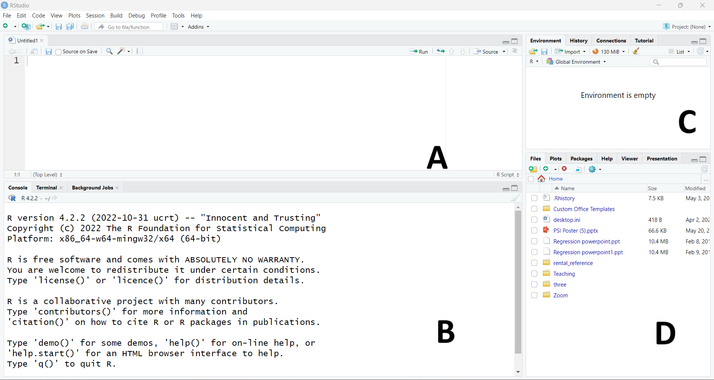
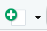
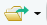

# Load data ----------
# Tidy data ----------1 Introduction to R and RStudio
1.1 The RStudio interface
There are a number of software packages based on the R programming language aimed at making writing and running analyses easier for users. They all run R in the background but look different and contain different features.
RStudio has been chosen for this course as it allows users to create script files, allowing code to be re-run, edited, and shared easily. RStudio also provides tools to help easily identify errors in R code, integrates help documentation into the main console and uses colour-coding to help read code at a glance.
Before installing RStudio, we must ensure that R is downloaded onto the machine. R is available to download for free for Windows, Mac, or Linux via the CRAN website.
Rstudio is also free to download from the Posit website.
1.1.0.1 The RStudio console window
The screenshot below shows the RStudio interface which comprises of four windows:

Window A: R script files
All analysis and actions in R are carried out using the R syntax language. R script files allow you to write and edit code before running it in the console window.
Style tip
Limit script files to 80 characters per line to ensure it is readable.
RStudio has an option to add a margin that makes this easier to adhere to. Under the Tools drop-down menu, select Global options. Select Code from the list on the right, then under the Display tab, tick the Show margin box.
If this window is not visible, create a new script file using File -> New File -> R Script from the drop-down menus or clicking the  icon above the console and selecting R Script. This will open a new, blank script file. More than one script file can be open at the same time.
Code entered into the script file does not run automatically. To run commands from the script, highlight the code and click the  icon above the top right corner of the script window (this can be carried out by pressing
icon above the top right corner of the script window (this can be carried out by pressing Ctrl + Enter in Windows or Command + Enter on a Mac computer). More than one command can be run at the same time by highlighting all of them.
The main advantage of using the script file rather than entering the code directly into the console is that it can be saved, edited and shared. To save a script file, use File -> Save As… from the drop down menu, or click the  icon at the top of the window. It is important to save the script files at regular intervals to avoid losing work. Once the script file has been saved, we can also use the keyboard shortcuts
icon at the top of the window. It is important to save the script files at regular intervals to avoid losing work. Once the script file has been saved, we can also use the keyboard shortcuts Ctrl + s on Windows and Command + s on Mac to save the latest script file.
Style tip
Script file names should be meaningful, lower case, and end in .R. Avoid using special characters in file names, including spaces. Use _ instead of spaces.
Where files should be run in a specific order, prefix the file name with numbers.
Past script files can be opened using File -> Open File… from the drop-down menu or by clicking the  icon and selecting a .R file. The keyboard shortcut to open an existing script file is Ctrl + o on Windows, and Command + o on Macs.
Window B: The R console
The R console window is where all commands run from the script file, results (other than plots), and messages, such as errors, are displayed. Commands can be written directly into the R console after the > symbol and executed using Enter on the keyboard. It is not recommended to write code directly into the console as it is cannot be saved or replicated.
Every time a new R session is opened, details about version and citations of R will be given by default. To clear text from the console window, use the keyboard shortcut control + l (this is the same for both Windows and Mac users). Be aware that this clears all text from the console, including any results. Before running this command, check that any results can be replicated within the script file.
Window C: Environment and history
This window lists all data and objects currently loaded into R. More details on the types of objects and how to use the Environment window are given in later sections.
Window D: Files, plots, packages and help
This window has many potential uses: graphics are displayed and can be saved from here, and R help files will appear here. This window is only available in the RStudio interface and not in the basic R package.
Exercise 1
- Open a new script file if you have not already done so.
- Save this script file into an appropriate location.
1.2 R syntax
All analyses within R are carried out using syntax, the R programming language. It is important to note that R is case-sensitive, so always ensure that you use the correct combination of upper and lower case letters when running functions or calling objects.
Any text written in the R console or script file can be treated the same as text from other documents or programmes: text can be highlighted, copied and pasted to make coding more efficient.
When creating script files, it is important to ensure they are clear and easy to read. Comments can be added to script files using the # symbol. R will ignore any text following the # on the same line.
Style tip
Combining # and - creates sections within a script file, making them easier to navigate and organise.
For example:
Helpful hint
To comment out chunks of code, highlight the rows and use the keyboard shortcut ctrl + shift + c on Windows, and Command + shift + c on Mac
The choice of brackets in R coding is particularly important as they all have different functions:
- Round brackets
( )are the most commonly used as they define arguments of functions. Any text followed by round brackets is assumed to be a function and R will attempt to run it. If the name of a function is not followed by round brackets, R will return the algorithm used to create the function within the console. - Square brackets
[ ]are used to set criteria or conditions within a function or object. - Curly brackets
{ }are used within loops, when creating a new function, and withinforandiffunctions.
All standard notation for mathematical calculations (+, -, *, /, ^, etc.) are compatible with R. At its simplest level, R is just a very powerful calculator!
Style tip
Although R will work whether a space is added before/after a mathematical operator, the style guide recommends to add them surrounding most mathematical operations (+, -, *, /), but not around ^.
For example:
# Stylish code
1959 - 683
(351 + 457)^2 - (213 + 169)^2
# Un-stylish code
1959-683
(351+457)^2 - (213 + 169) ^ 2Exercise 2
- Add your name and the date to the top of your script file (hint: comment this out so R does not try to run it)
- Use R to calculate the following calculations. Add the result to the same line of the script file in a way that ensures there are no errors in the code.
- \(64^2\)
- \(3432 \div 8\)
- \(96 \times 72\)
When you have finished this exercise, select the entire script file (using ctrl + a on windows or Command + a on Mac) and run it to ensure there are no errors in the code.
1.3 R objects and functions
1.3.1 Objects
One of the main advantages to using R over other software packages such as SPSS is that more than one dataset can be accessed at the same time. A collection of data stored in any format within the R session is known as an object. Objects can include single numbers, single variables, entire datasets, lists of datasets, or even tables and graphs.
Style tip
Object names should only contain lower case letters, numbers and _ (instead of a space to separate words). The should be meaningful and concise.
Objects are defined in R using the <- or = symbols. For example,
object_1 <- 81Creates an object in the environment named object_1, which takes the value 81. This will appear in the environment window of the console (window C from the interface shown earlier).
Style tip
Although both work, use <- for assignment, not =.
To retrieve an object, type its name into the script or console and run it. This object can then be included in functions or operations in place of the value assigned to it:
object_1
## [1] 81
object_1 * 2
## [1] 162R has some mathematical objects stored by default such as pi that can be used in calculations.
pi
## [1] 3.141593The [1] that appears at the beginning of each output line indicates that this is the first element in the object. If there were two lines then the second line would start with the number of that element in square brackets.
For example, if we had an object with 6 elements and when called the first line contained the first 5 elements, each line would begin with [1] and [6] respectively.
1.3.2 Functions
Functions are built-in commands that allow R users to run analyses. All functions require the definition of arguments within round brackets (). Each function requires different information and has different arguments that can be used to customise the analysis. A detailed list of these arguments and a description of the function can be found in the function’s associated help file.
1.3.3 Help files
Each function that exists within R has an associated help file. RStudio does not require an internet connection to access these help files if the function is available in the current session of R.
To retrieve help files, enter ? followed by the function name into the console window, e.g ?mean. The help file will appear in window D of the interface shown in the introduction.
Help files contain the following information:
- Description: what the function is used for
- Usage: how the function is used
- Arguments: required and optional arguments entered into round brackets necessary for the function to work
- Details: relevant details about the function in question
- References
- See also: links to other relevant functions
- Examples: example code with applications of the function
1.3.4 Error and warning messages
Where a function or object has not been correctly specified, or their is some mistake in the syntax that has been sent to the console, R will return an error message. These messages are generally informative and include the location of the error.
The most common errors include misspelling functions or objects:
sqrt(ojbect_1)
## Error in eval(expr, envir, enclos): object 'ojbect_1' not found
Sqrt(object_1)
## Error in Sqrt(object_1): could not find function "Sqrt"Or where an object has not yet been specified:
plot(x, y)
## Error in eval(expr, envir, enclos): object 'x' not foundWhen R returns an error message, this means that the operation has been completely halted. R may also return warning messages which look similar to errors but does not necessarily mean the operation has been stopped.
Warnings are included to indicate that R suspects something in the operation may be wrong and should be checked. There are occasions where warnings can be ignored but this is only after the operation has been checked.
When working within the R console, if an incomplete command is run, a + symbol will appear in the console, rather than the usual >. This indicates that R expects you to keep writing the previous code. To overcome this issue, either finish the command on the next line of the console, or press the esc button on your keyboard to start from scratch.
One of the benefits of using RStudio rather than the basic R package is that it will suggest object or function names after typing the first few letters. This avoids spelling mistakes and accidental errors when running code. To accept the suggestion, either click the correct choice with your mouse or use the tab button on your keyboard.
1.3.5 Cleaning the environment
To remove objects from the RStudio environment, we can use the rm function. This can be combined with the ls() function, which lists all objects in the environment, to remove all objects currently loaded:
rm(list = ls())
Warning
There are no undo and redo buttons for R syntax. The rm function will permanently delete objects from the environment. The only way to reverse this is to re-run the code that created the objects originally from the script file.
1.3.6 R packages
R packages are a collection of functions and datasets developed by R users that expand existing R capabilities or add completely new ones. Packages allow users to apply the most up-to-date methods shortly after they are developed, unlike other statistical software packages that require an entirely new version.
1.3.6.1 Installing packages from CRAN
The quickest way to install a package in R is by using the install.packages function. This sends RStudio to the online repository of tested and verified R packages (known as CRAN) and downloads the package files onto the machine you are currently working from in temporary files. Ensure that the package you wish to install is spelled correctly and surrounded by ''.
Warning
The install.packages function requires an internet connection, and can take a long time if the package has a lot of dependent packages that also need downloading.
This process should only be carried out the first time a package is used on a machine, or when a substantial update has taken place, to download the latest version of the package.
1.3.6.2 Loading packages to an R session
Every time a new session of RStudio is opened, packages must be reloaded. To load a package into R (and gain access to the associated functions and data), use the library function.
Loading a package does not require an internet connection, but will only work if the package has already been installed and saved onto the computer you are working from. If you are unsure, use the function installed.packages to return a list of all packages that are loaded onto the machine you are working from.
Style tip
Add your library function at the beginning of your script file. This reminds you to re-load packages when opening a new R session, and reduces the chance of error messages from functions requiring these packages.